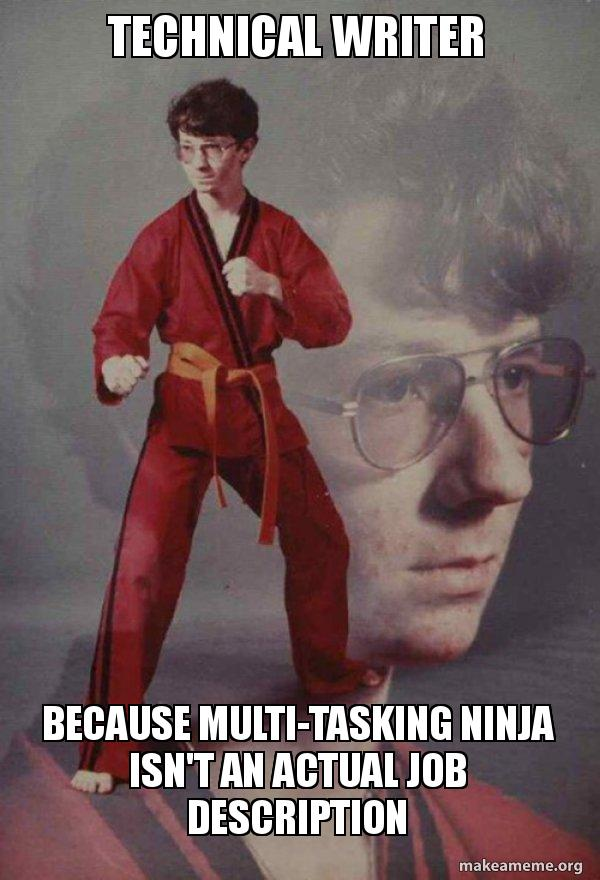

- 
Feeling swamped by deadlines, battling with stubborn formatting, or just needing a good laugh? You've come to the right place.
This website is a chill zone for all things technical writing memes. Here you can find a collection of hilarious memes that capture the daily struggles (and triumphs!) of our profession.
Click any meme thumbnail to see it in full glory, and feel free to browse the gallery at your leisure.
So grab a cup of coffee (or tea, we don't judge), take a break, and let these memes remind you that you're not alone in the trenches of technical writing.
The memes you see on this website are hilarious takes on the technical writing life, but they're not our own creations!
We've scoured the vast internet to bring you a collection of the best technical writer memes out there. We don't claim ownership of any of the content displayed.
If you see a meme that you created and would like it removed, or if you have any copyright concerns, please don't hesitate to and we'll be happy to address it.
In short: We love these memes, but we respect the creators! Let's keep the laughter flowing and the credit where it's due.